3
Oreate AI
Oreate AI 是百度文库 AI 版的海外产品，海外用户已达百万级，并在海外社交媒体平台引发广泛关注。
我参与了 Oreate AI 中多模态场景的视觉范式设计与基础建设更新；优化核心的图与视频场景下的模型交互体验优化，提升输出效果。构建高质量数据集，支撑案例迭代与流程自动化。
我的整个工作内容围绕Oreate AI的多模态场景展开，以生图与生视频场景为主。提高用户在模型使用上的体验感，兼顾AI生成专业性、交互流畅度与视觉质感。以及保证用户高效产出高质量内容，丰富完整的后期编辑工具链，全面提升并满足用户在智能化体验与创作场景下的多样化需求。
对市面上相关AI生成类产品进行竞品调研，重点调研生成模式上的体验变化，其次为视觉与交互部分，包括但不限于Pollo AI，Kling，OiiOii，Lovart等。
结合自身产品进度，确认优化维度：视频场景的创作难度较大、提示词模版可用量少、模版不支持配置、模型量少、场景基础功能匮乏。
视频场景下辅助用户更好地创作是重点。
后续模版支持可配置，和运营协同，紧追热点，共创优质模版，辅助用户创作。
沉淀不同类别的可用提示词模版，辅助KOL进行创作，并把提示词玩法公开给用户。
随时紧跟新模型，快速上线。
提升视频场景基础性能，协调研发，降低非风控问题生成失败率。
分析用户query，挖掘可聚焦的场景，对后续做垂类做积累。
让不可控的生成结果变成用户可控的创作过程，构建标准化优质案例产出规范：进入编辑率、二次编辑后的采用及下载率；注重单次生成质量，尤其是新手一次编辑的成功率；在减少推倒重来的次数基础上，让生成更好看。
相比于更好的单次生成，用户更需要改得动的结果，增加编辑器功能：抓出用户行为数据，生成 2–3次就放弃，而非持续调Prompt；是局部生成问题，非单次结果不行；区分AI能力问题与产品体验问题。
视觉及交互优化，呈现更为清晰的模版层级，加大曝光模版入口：模版层面做减法，单页面更多的模版并不能提高辨识度；确认品牌调性，使视觉层富有专业性但不失活泼度；功能重构，更新用户反馈场景，优化应用页面策略。
图片场景案例定义3C公式模版来稳定产出Prompt，所生成的图片应用于案例页。配合AI辅助，产出速度提升，在一个星期内可产出100+图片案例，同时图片质量也较高，对品牌、生活、设计、电商、娱乐等类别均有覆盖。
从产品的体验数据上来看，生图功能渗透率环比Q1提升18.9%（生图功能渗透率 = 用户点击发送UV/全站访问UV，Q1是6.24%，Q2提升到7.42%），引入更优质的模型，生成的质量提升，用户对生成结果的可用性更认可，下载率有明显提高，环比Q1提升15.6%，（下载点击率 = 下载按钮点击PV/用户生成完成PV，Q1 为16.05%，Q2提升到18.56%，+2.51pp）
这是我在视频案例制作过程中总结出的生成方式，以用户的想法描述取代逐词控制。但它也有明确的失效区。对于需要逐镜复现、有硬性交付规范的商业项目和工业化产线，精细的Prompt仍然是更可靠的工具，不该被本方法替代，它服务的是创意探索与叙事表达场景。
从产品的体验数据上来看，模版在视频场景更加受欢迎，被更多的用户使用，Q1 模板使用率是 7.08%，Q2 提升到11.31%，提升 4.23 pp。视频场景改版后，数据提升明显：付费金额和付费用户数提升，付费用户数提升+64.3%、ARPPU值提升+67.9%，用户更容易成交，每个用户贡献更高，内容消费能力也变强，下载率提升+29.3%，点赞率提升+46.9%，线后产出的内容更有被消费、被认可的价值。
对目前产品内容进行问题定义，通过20000+用户query与行为数据分析，发现其中存在大量图像编辑需求。多数用户在对prompt的调整时仅存在于局部，并且不是持续调整，有时用户希望的并不是一次性的结果，而是可以改动的结果。对于产品而言，要做的应该是把AI能力转化成用户可控的编辑过程，应该要让用户感知到从“希望AI一次性就成功”到“和AI来回协作得到合适答案”的产品变化。
统计用户编辑需求类别共20类，汇总成核心的五类编辑功能。推出编辑器功能。整合多项图像操作能力，丰富图像场景能力，增加用户对图像部分的体验与可操作性，不再只能通过prompt描述来对图片进行调整，可视化编辑过程。
融合局部重绘、扩图、消除、裁切、高清修复等核心功能及功能引导，用户可hover结果图与大图预览实现多入口进入编辑页，视觉上仅保留主题色倾向，使专注度始终停留在图像本身。在内页的工具上，我们取消了常见设计工具的布置，例如蒙层、反转、强度等工具，放弃专业性的体现，以更简洁的使用方式便于所有用户都不会被卡住，无论专业或是非专业创作者都能够得到较好的产品体验。
1.如无必要，不增实体，做减法比填充视觉更加重要。要求视觉中的可见元素都有明确的作用，要么在传达信息，要么在支撑逻辑，要么在渲染调性，要么在放大关键亮点。
2.只给出模版的关键信息，用呼吸感降低信息密度带来的视觉疲惫。
3.原有4列模版改版为3列，hover图片只给出应用标识，去除多余低频button等。避免视觉陷阱，减少无意义装饰。
4.将反馈的纯Icon更新为表情类型，鼓励用户对生成结果进行评价。
图片场景改版后，转化效率出现明显改善，对比上线前后数据，投放花费下降 60.3%、到访下降 37.3%，但投放口径付费率仍提升+65.3%，CAC下降 -61.7%，ROAS0 +73.4%，说明首页改版显著提升了投放流量的转化效率和回收效率。创作深度增长，人均发送pv+41.2%，对创作的认可度提升点赞UV日均+9.5%，Q2上线了图片场景的编辑工具，累计带来新增用户23.8w，付费点击7017次，场景付费金额$459.35。
这是我第一个产品项目，虽说职位是PM，但工作内容也包括了很多设计的部分，由于之前的工作经验，与研发和设计之间对齐也比较熟练。总结下来，感受到与设计最大的不同在于，视角变得更为重要了。为什么要做？用户有什么问题？我们要达成什么样的业务目标？这些在思考过程中占比越来越多，在写产品需求的时候也会格外关注入口的放置、功能优先级的排序、怎样引导用户，决策大于视觉效果。此外，在AI产品的语境下，产品还应该直面用户根本需求的窗口，与其关注用户需要多好的模型，更应该关注用户为什么需要模型，这样才能够创造更契合的需求场景。
简单来说，我认为产品和设计之间还是有许多共通点的，设计一词的本质其实就是解决问题，我想产品也是。
总结出问题方向：
通过对已有query、埋点、kol反馈、pv、uv等数据进行分析，得到优化策略：
3C公式产出模版。
Intent Casting。
图片编辑器。
图片场景优化从四个部分展开。
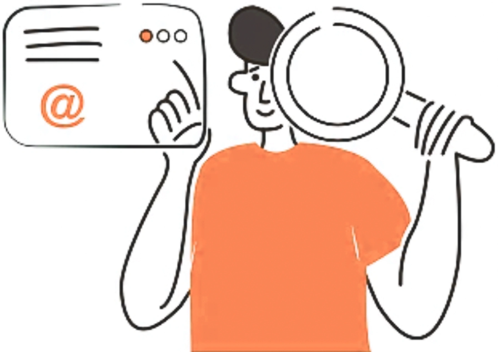
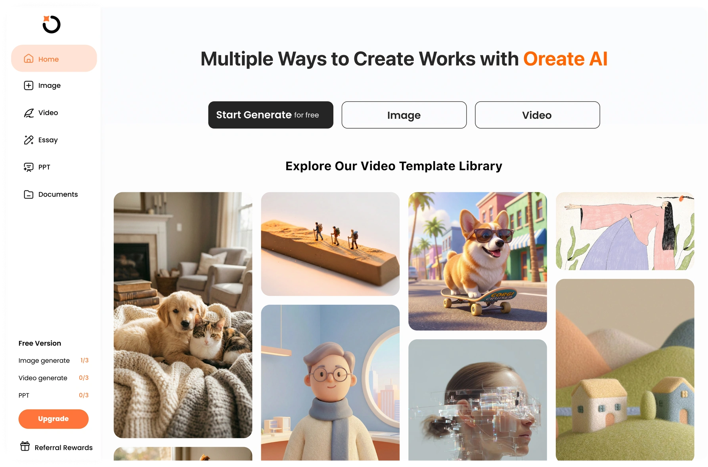
Problem
Strategy
Solution
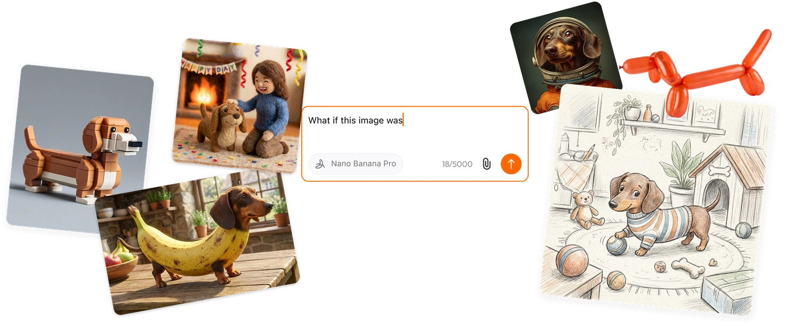
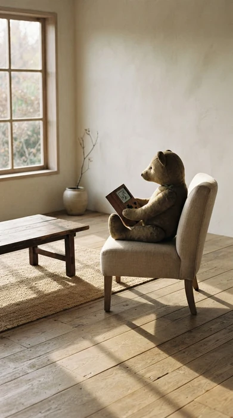
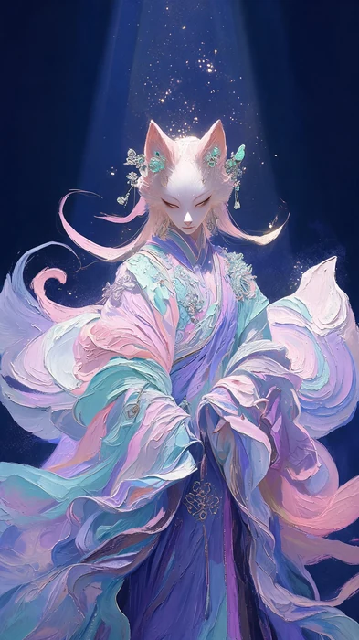
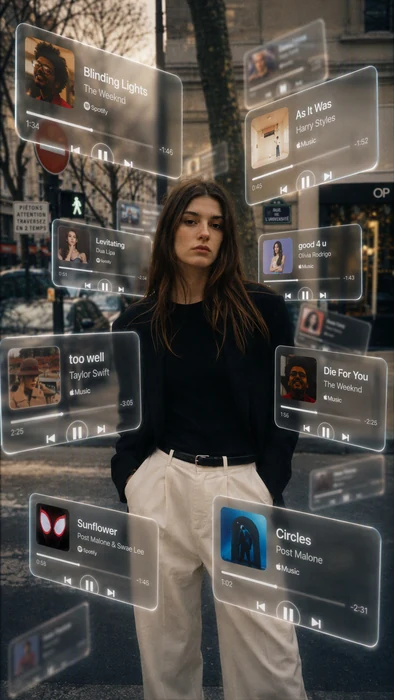
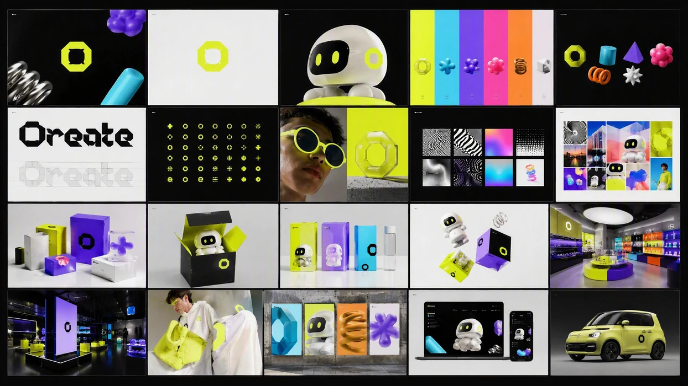
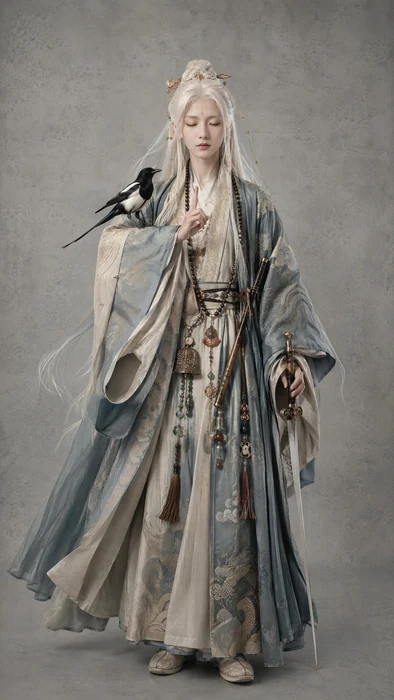
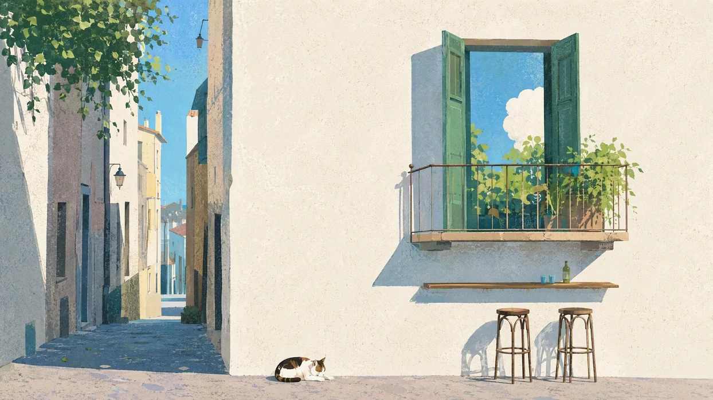
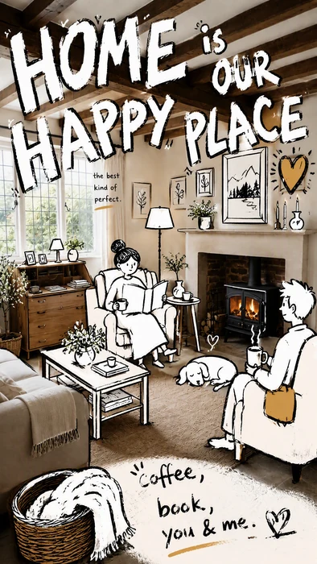
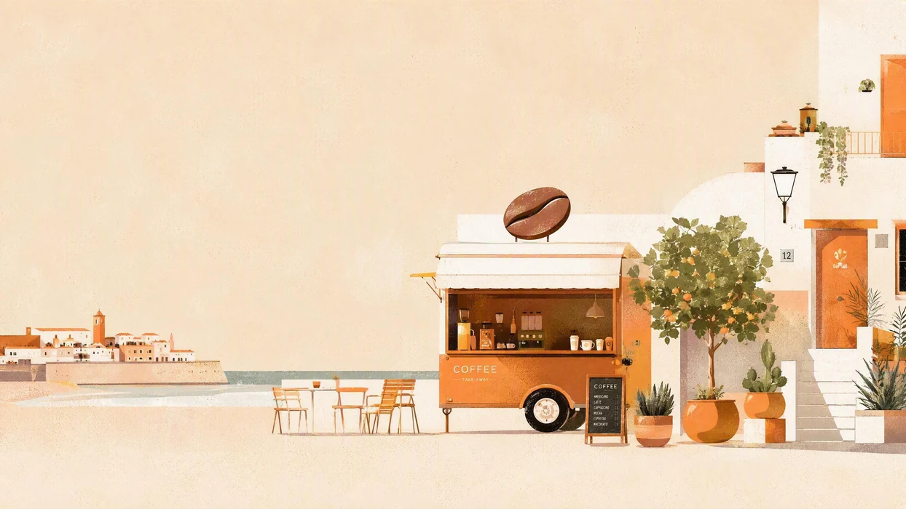
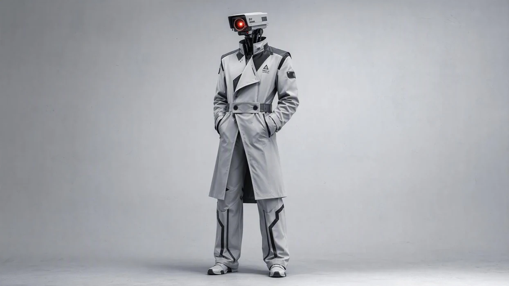
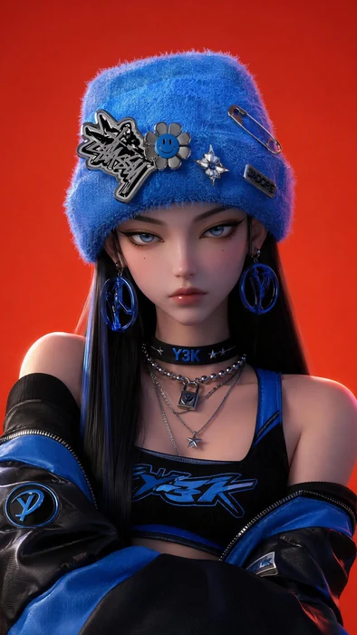
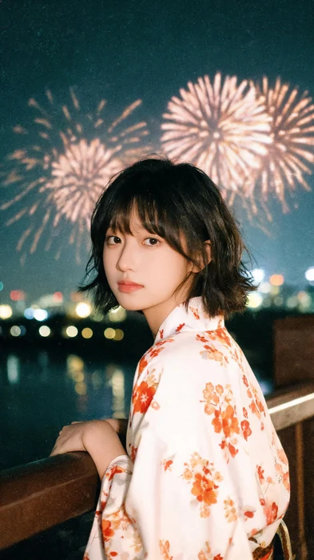
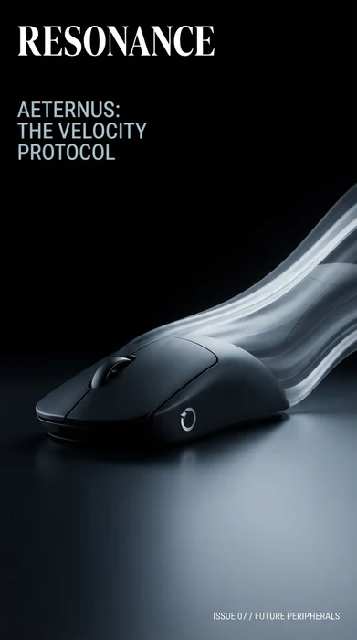
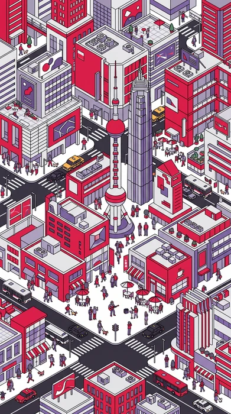
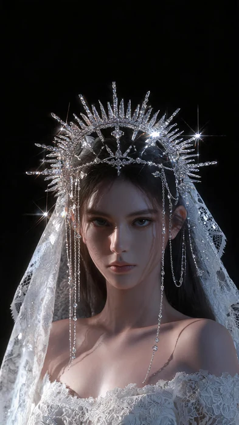
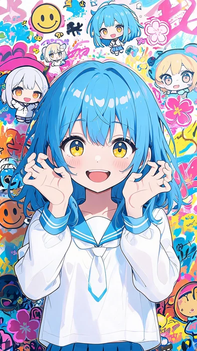
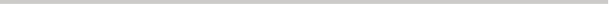
定义用户身份、需求背景、生成目标等
作为电商卖家、影视导演、UI设计师等，进行某项具体的工作活动（产品宣传海报、分镜头设计、品牌UI设计），对整个生成过程规范进行前置的背景定义。
承接生成背景后进行的画面中具体内容的描述，根据用户身份的不同会进行相应的更改。
主体：有（人物/动物/物体/抽象矢量等）、无主体。
环境:尺寸-16:9、4k等；风格-写实、二次元、赛伯朋克、水彩、马克笔手绘等；色调-暖/冷、dark/light mode、光影等；镜头/构图-室内/外场景、俯视、黄金分割比、鱼眼镜头、长焦镜头等；文字-无衬线字体、3d字体等；质感/特效-磨砂玻璃、微拟物质感、动态模糊等
行为：主体的具体行为，依据用户需求来描述。
总的来说即：
A谁或什么事物是焦点、场景在哪里、在什么时间
B具体、视觉化的元素，用于充实角色和环境
C发生了什么？场景中的驱动事件和变化
D感受、氛围和非视觉元素
E特定的摄像机角度、镜头、运镜
对生成内容进行进一步细化与规范，注明必须做的事与不要做的事
用户以图生图的形式生成：“将图片B中的风格换成A的”即“不要更换B的主体与必须更换B的风格”。
Context
Component
Criteria
明确图像范围
方向词
反向控制
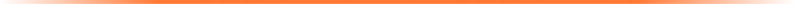
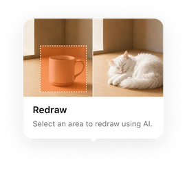
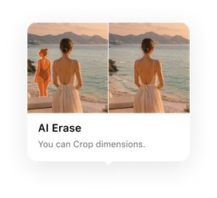
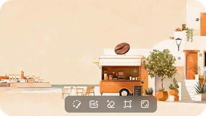
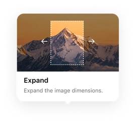
产出的图片素材
Intent Casting
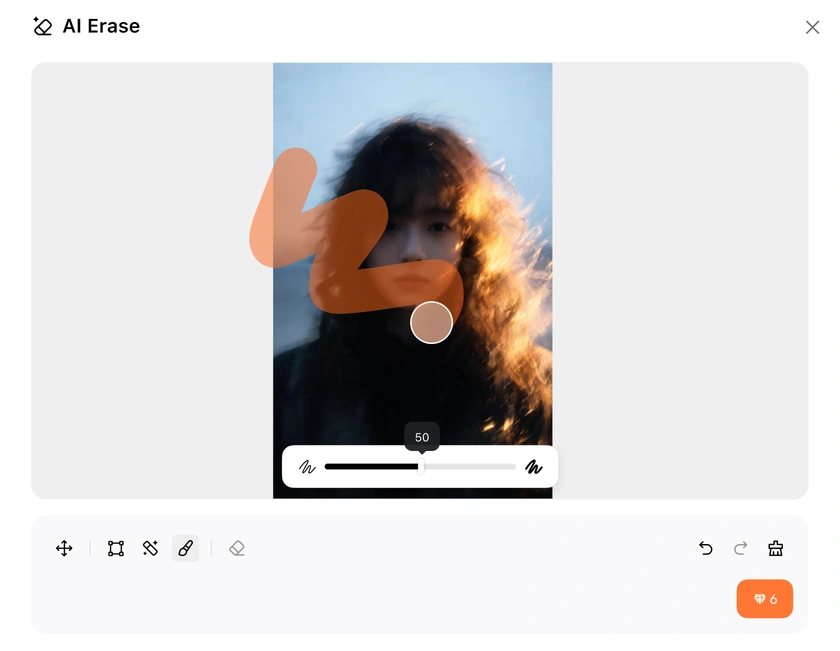
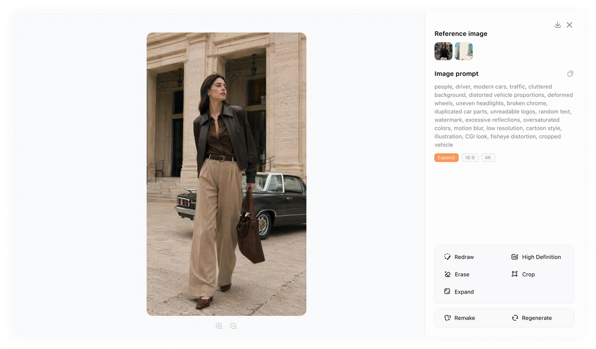
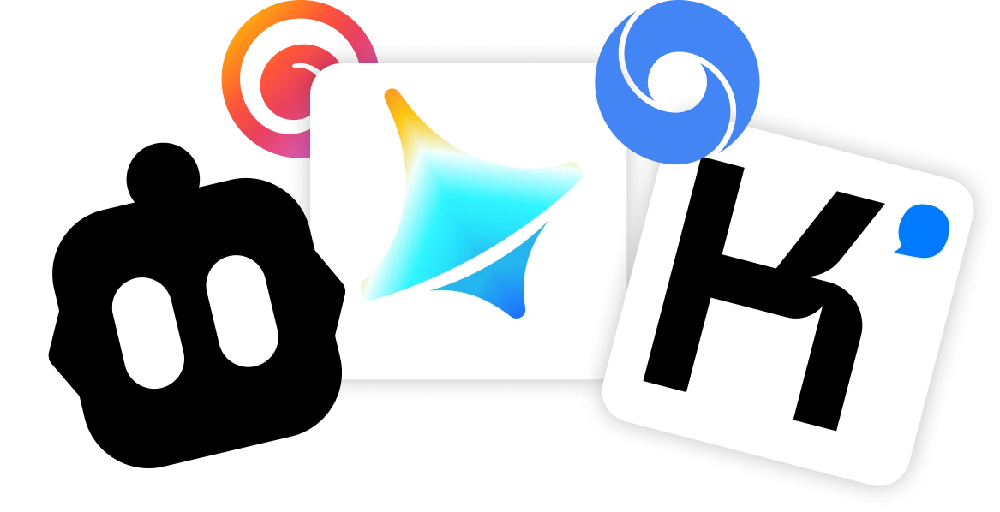
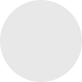
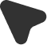
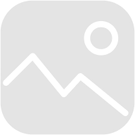
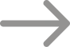
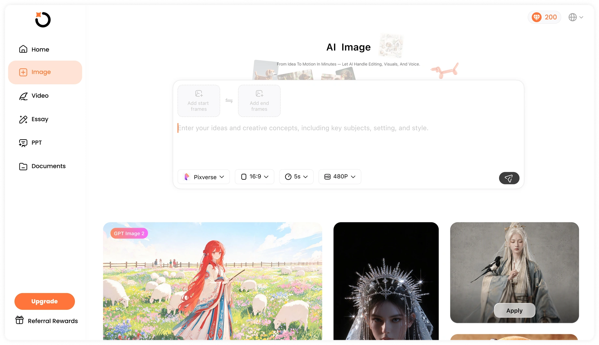
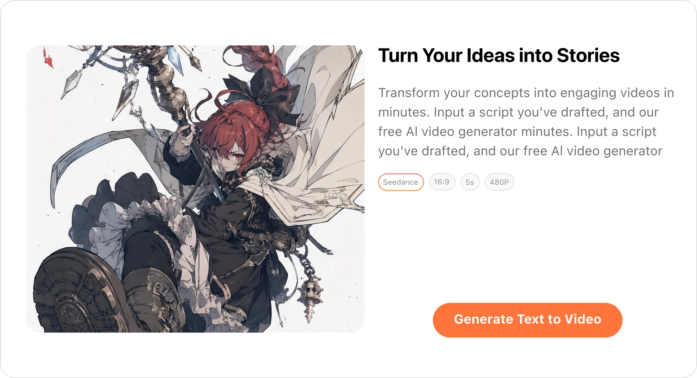
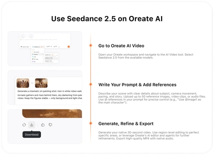
Outcome
当然，一个完整的项目肯定不止这些，这仅是我所参与的部分，感兴趣的话找我聊聊。